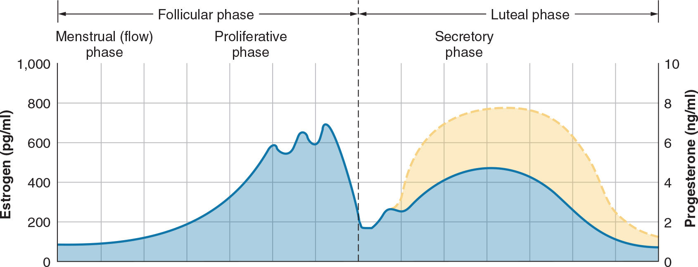

Sex-Related Differences and Their Implications for Resistance Training(僅供術語對照) | 原文頁碼 p438～p464
女性與男性的身體在解剖、激素與代謝上有差異,但絕對力量與相對力量的差距其實很小,訓練原理對男女同樣適用。真正要特別關注的是女性專屬議題:前十字韌帶損傷、孕期變化、月經週期激素與骨盆底功能。一切安排都以個人化為最高原則。
女性的成熟平均早於男性,大多數生長發育指標在 18 歲左右完成。但有三個進程會延續到成年:骨骺板(epiphyseal plate)在 20 歲左右閉合;骨密度峯值(peak bone mass)約在 30 歲才達成;大腦在 20 多歲仍持續發育,但發育集中在負責決策的前額葉,運動相關腦區已經成熟。視覺感知這類功能可以持續發展到 30 歲出頭。重點是:這些階段都不會讓高強度或高負荷訓練(包含增強式訓練)的受傷風險變高。反應敏捷性訓練可以提升視覺感知技能,還能降低晚年跌倒風險。
青春期時,女孩雌激素(estrogen)分泌增加,促進脂肪沉積與乳房發育;男孩睪固酮(testosterone)分泌增加,促進骨骼形成與蛋白質合成。男孩生長週期較長、青春期較晚,所以成年男性身高通常較高。成年女性的體脂率高於男性,肌肉量與骨密度低於男性,總體重也較低。男性肩部相對臀部更寬,能支撐更多肌肉並為肩部肌羣提供力學優勢;女性則臀部相對腰部與肩部更寬。
如果沒有持續的阻力訓練,肌肉量與骨密度會從 30 歲中期開始下降,50 歲左右加速,更年期之後尤其明顯。所以女性任何阻力訓練計劃的重點只有一個:維持肌肉量與骨礦物質密度。這不只關乎運動表現,也能延長運動生涯、降低受傷風險,並維持老年時的日常生活能力與獨立性。
妊娠只發生在青春期性發育完成之後、停經之前,年齡範圍為 12～51 歲。各專業組織一致認定運動屬低風險活動,對大多數孕婦有益。訓練變項(動作選擇、頻率、強度、時間)要依運動員確認懷孕前的基線體能水平來定。孕期做中等強度阻力訓練可以改善血糖控制與胰島素利用率、提升精力、減輕疲勞。精英運動員能承受各種訓練負荷並順利分娩、重返賽場,但多數研究集中在中等負荷;強度超過最大心率 90% 的訓練(包含高強度間歇),在證據更充足前應謹慎。
心肺方面:心輸出量在第一孕期上升約 20%,第二孕期上升約 40%,妊娠晚期略降,表現為每搏輸出量減少、心率增加;周邊血管阻力在第二孕期下降 25%～30%,從妊娠 32 週起回升;血容量持續增加至孕前水平的 50%,血漿容量在 34 週時增加 50%;分鐘通氣量增加 40%～50%。仰臥時子宮壓迫迴流血管,靜脈迴流減少,每搏輸出量與心輸出量跟著下降,所以第二、第三孕期要避開仰臥姿勢,改用上斜、側臥或站立。肌肉骨骼方面:韌帶鬆弛度從第一孕期就增加,可能持續到產後 5 個月;第二孕期重心改變、平衡下降;第三孕期腰椎前凸增加、腳部尺寸增大、神經壓迫病例增加。
孕期心率可能提前達到最大值,所以不能只用心率監控強度,要搭配主觀疲勞程度(rating of perceived exertion, RPE)。產後:多數心血管與呼吸變化在分娩後 1～2 週回到孕前水平;產後應立即開始骨盆底肌訓練(凱格爾運動,Kegel exercise),至少持續 12～24 週;核心穩定訓練同樣在產後 12～24 週內盡早進行;循序恢復運動、增加飲水;剖腹產後,腹部肌肉要回到孕前力量與穩定度,需要更多時間。建議從第一孕期就開始骨盆底訓練,並增加徒手與負重深蹲,以維持力量、改善分娩過程。
前十字韌帶(anterior cruciate ligament, ACL)損傷:男性的絕對發生率較高,但在相同運動項目中,女性的相對發生率是男性的 2 倍。女性 ACL 損傷多來自非接觸動作,例如減速、側向旋轉與落地。股骨髁間窩大小、脛骨後傾角、韌帶鬆弛等解剖因素有影響,但目前普遍認為最重要的因素是神經肌肉功能不足,這會造成觸地時動態膝外翻增加等異常生物力學;訓練機會、資源與性別不平等的社會文化因素則仍在研究中。預防方向:青春期前就開始預備性體能訓練並終身堅持;由體能訓練專家設計漸進超負荷、增強式、敏捷性與平衡訓練。足球、長曲棍球、籃球是高風險項目。
髕股關節疼痛綜合徵(patellofemoral pain syndrome, PFPS)是髕股關節疼痛的統稱,俗稱跑步膝(runner's knee)或跳躍膝(jumper's knee),女性發生率是男性的 2 倍以上。青春期前女性髖關節力學與 PFPS 有關,發育過程中的膝關節力學改變也可能相關。從業者要關注下肢生物力學、動作技巧、不平衡與薄弱環節,並可參考美國國家運動訓練師協會(NATA)的立場聲明,使用支具或貼扎。
骨應力損傷(bone stress injury)包含應力性骨折(stress fracture),女性運動員發生率通常高於男性。它是重複應力累積造成的過度使用損傷,特徵是骨骼異常重塑。要持續監測運動負荷、骨骼健康狀態與運動相對能量不足綜合徵(relative energy deficiency in sport, RED-S)的症狀,並篩查維生素 D 水平與過早運動專項化;維持能刺激骨生成(osteogenesis)的訓練,以週期化方式逐步增加負荷。
腦震盪(concussion)是頭部或身體受撞擊後,大腦在顱骨內快速前後移動、幹擾正常腦功能的輕度創傷性腦損傷。足球、籃球、壘球等項目中女性發生率較高,曲棍球項目中女性腦震盪發生率最高。女性與器材、場地接觸的頻率是男性的 2 倍,但球員間身體接觸導致腦震盪的程度男女沒有明顯差異。女性腦震盪後恢復時間更長、症狀持續更久;多次腦震盪時腦血流量降低,單任務與雙任務步態之間的變化增大。管理與復出方案應依臨牀表現個別化,不以性別區分。
心理健康方面,女性運動員的倦怠、飲食失調、焦慮與憂鬱風險較高,外貌壓力、歧視與經濟壓力也較大;精英女運動員回報憂鬱症狀的可能性是男性的 2 倍;2021 年有 40% 的大學女運動員回報曾經歷極度焦慮,男性為 22%。睡眠方面,睡眠不足(少於 7 小時/晚)是受傷的已知風險因子,大學女運動員尤其容易睡眠時間過短,訓練與比賽後睡眠量與睡眠品質都會下降,研究證實睡眠衛生教育有效。骨盆底功能障礙(pelvic floor dysfunction, PFD)指支撐骨盆腔器官、控制排尿的肌肉出現功能障礙,最常見的是尿失禁(urinary incontinence, UI)與壓力性尿失禁(stress urinary incontinence, SUI)。報告顯示,女性運動員尿失禁發生率為男性運動員的 5 倍、久坐女性的 2.7 倍;總體盛行率為女性運動員 27%、久坐女性 36%。治療包含預防、生活型態調整、骨盆底肌強化、生物回饋與藥物,必要時諮詢骨盆底專科物理治療師。
體能訓練專業人員應做的事:建議由運動醫學醫師做賽前篩查;鼓勵全年參與包含力量、增強式、速度敏捷與柔韌性的週期化訓練;為女性反覆示範正確的動作力學(跳躍、落地、扭轉、切入);每次訓練前先做一般動態熱身,再做與訓練動作相似的專項熱身,重點啟動後鏈肌羣;訓練中給予增強性回饋,促進技能遷移。
骨骼:阻力訓練的機械負荷能直接增加骨骼重塑程度與骨量,可提高全身各部位骨骼的密度;高強度阻力訓練促進骨生成的效果更顯著;青春期前是透過負重與負荷活動提升骨密度的最佳時期。
肌肉:女性同樣會出現肌肉肥大(muscle hypertrophy)。用電腦斷層掃描精確測量肌肉橫截面積時,男女在最長 16 週內的肥大增幅相似。未使用合成代謝類固醇的女性舉重、健美與田徑運動員,在定期高強度或大容量訓練下也能出現肌肉肥大。女性肌肉量較少的原因之一是男性起始絕對肌肉量大、絕對肥大程度較高;遺傳(例如易長大肌羣)也是因素。
代謝:男性平均擁有比例略高的快速收縮 II 型肌纖維,加上肌肉量大,磷酸肌酸與肝醣的儲存、肌酸激酶與醣解酶的含量都更高,整體醣解能力更強。女性平均 I 型氧化纖維比例較高,長時間運動中抗疲勞能力更強,脂肪氧化較多,碳水化合物與蛋白質氧化較少;有研究發現女性的粒線體呼吸作用比男性高出近 33%,這在耐力活動(含超耐力賽事)中可能是優勢。有氧適應上,女性經耐力訓練後血容量增加幅度較小,心臟尺寸(左心室腔大小、壁厚)增加幅度相當或更小,但左心室功能(如射血分數)的適應與男性相似;女性在各強度跑步下的耗氧效率較高、跑步經濟性較佳。女性以不同機制補償較小的心臟與較低的攜氧能力。
力量與功率:女性的絕對肌力低於男性,主因是男性肌纖維尺寸更大;上肢絕對力量差距大,下肢絕對力量通常較接近男性。以體重為分母時,女性下肢力量與男性相似,上肢仍略遜;若以去脂體重(fat-free mass)為基準比較,男女力量差異往往消失。功率輸出模式相同:相對於瘦體重的下肢功率與男性相似,上肢仍有差距;女性肌球蛋白重鏈同工型 IIa 纖維百分比較低,可能部分解釋力量發展速率的差異。在漸進超負荷與針對性訓練下,女性力量與爆發力的提升幅度與男性相似。一項為期約 2.5 年的研究顯示,大學排球運動員在排球訓練外結合傳統阻力訓練與不同負荷的舉重訓練,最大力量與垂直跳高度都提高。在耐力訓練中加入大重量力量訓練,可提高肌力、運動表現與肌肉體積,且不影響耐力跑成績或跑步經濟性。
內分泌系統(endocrine system)調控身體對壓力源(含體力活動)的反應,並調節肌肉的修復與生長。傳統觀點認為,訓練後的急性內分泌反應比靜息激素濃度的慢性變化更能促進肌肉生長與重塑。對女性肌肉與力量發展有顯著影響的主要激素是睪固酮、生長激素(growth hormone, GH)家族、胰島素樣生長因子 1(insulin-like growth factor-1, IGF-1)與皮質醇(cortisol);月經週期激素在女性體內的濃度遠高於男性,也必須認識。
睪固酮:女性卵巢與腎上腺會少量分泌。女性靜息濃度遠低於男性且個體差異大,這能解釋絕對肥大與力量反應的差異,但兩性的相對肥大與力量增幅相似。一次急性阻力訓練不會讓女性睪固酮顯著升高;隨著訓練時間延長,部分女性會出現急性升高,可能與睪固酮降解速率下降(代謝產物降低)有關。睪固酮對女性的肌肉體積、力量與爆發力發展仍可能扮演重要角色,也可能是衡量個體訓練能力的指標。
生長激素與 IGF-1:肌肉蛋白質合成需要 IGF-1 觸發。女性靜息 GH 濃度高於男性;長期訓練後女性靜息 GH 反而低於男性,可能代表女性對 GH 更敏感,但研究尚不充分。長期阻力訓練後,男女循環 GH 的升高幅度相似。女性一次急性阻力運動後,循環 GH 濃度會增加 2～4 倍。升高幅度取決於刺激類型與總運動量:10RM 負荷搭配 1 分鐘短休息的高總量方案、大肌羣動作、多組訓練,以及會抬高血乳酸、降低血糖的運動,都會讓 GH 顯著上升;隨著訓練進展,運動引起的 GH 升高幅度也會增加。
皮質醇:調節血糖與發炎反應,運動與比賽前會升高,為心理與代謝需求做準備。訓練有素的女性比久坐女性升高更顯著;對急性運動皮質醇反應最強的方案,是會讓 GH 與血乳酸升高的方案。女性對急性運動的皮質醇反應比男性弱,原因可能是女性對皮質醇敏感性較高,或女性性激素調控著交感神經、腎上腺與下丘腦垂體軸的活動。精英女運動員運動前不出現皮質醇的預期性升高,但分泌量更高、分泌模式不同;雌二醇與黃體素可能降低皮質醇反應性。
雌二醇(estradiol)與黃體素(progesterone):卵巢釋放這兩種主要激素。週期前半段出現月經出血,隨後雌二醇升到峯值再下降;後半段黃體素上升並達峯值,雌二醇出現幅度較小的第二峯值;週期結束時兩者都降到最低。雌二醇能直接影響肌肉、肌腱與韌帶的結構與功能,幫助肌肉質量與力量增加。它對骨骼肌有保護作用:減少運動後的細胞膜破壞,發揮抗氧化與穩定細胞膜的效果,調節發炎細胞浸潤,並促進蛋白質合成、抑制蛋白質降解,讓身體對阻力訓練的反應更佳。但濃度太高也不好:高雌二醇會讓力量與運動表現下降,增加災難性韌帶損傷風險;過低同樣有害,肌肉細胞死亡增加,骨骼肌質量與力量下降。一次高強度阻力訓練後雌二醇會升高,可能來自將睪固酮轉化為雌二醇的酵素活性增強。維持規律月經很重要,能充分獲得訓練適應,並降低雌二醇過低的風險。痛經、噁心、頭痛等症狀則可能幹擾訓練。
月經週期要不要影響訓練計劃?部分研究認為週期階段會影響表現,另一些研究顯示自然週期各階段力量指標差異甚微。考慮到激素類避孕藥使用廣泛,且月經不規律相當常見,最新的薈萃分析顯示:訓練有素的女性運動員,其月經週期與運動表現之間沒有系統性關聯。因此目前的證據不支持依月經週期階段調整阻力訓練方案。本章結論是:性別差異要懂,但個人需求永遠優先。
| 中文術語 | English | 一句話定義 |
|---|---|---|
| 前十字韌帶 | anterior cruciate ligament, ACL | 穩定膝關節的韌帶,女性相對損傷風險為男性 2 倍。 |
| 骨應力損傷 | bone stress injury | 重複應力累積造成的骨骼過度使用損傷,含應力性骨折。 |
| 應力性骨折 | stress fracture | 骨應力損傷的嚴重形式。 |
| 髕股關節疼痛綜合徵 | patellofemoral pain syndrome, PFPS | 髕股關節疼痛統稱,俗稱跑步膝或跳躍膝。 |
| 腦震盪 | concussion | 撞擊後大腦在顱骨內快速前後移動造成的輕度創傷性腦損傷。 |
| 皮質醇 | cortisol | 調節血糖與發炎反應的激素,賽前的預期升高屬於準備反應。 |
| 雌二醇 | estradiol | 生育期雌激素主要形式,保護骨骼肌但過高過低都有害。 |
| 雌激素 | estrogen | 青春期促進脂肪沉積與乳房發育的女性激素總稱。 |
| 黃體素 | progesterone | 月經週期後半段上升到峯值的卵巢激素。 |
| 生長激素 | growth hormone, GH | 參與肌肉重塑與修復,急性運動後女性升高 2～4 倍。 |
| 胰島素樣生長因子 1 | insulin-like growth factor-1, IGF-1 | 觸發肌肉蛋白質合成所必需的生長因子。 |
| 月經週期 | menstrual cycle | 約 12～50 歲之間的週期性激素與生理變化。 |
| 骨盆底功能障礙 | pelvic floor dysfunction, PFD | 支撐骨盆腔器官與排尿控制的肌肉出現功能障礙。 |
| 尿失禁 / 壓力性尿失禁 | urinary incontinence, UI / stress urinary incontinence, SUI | 尿液不自主流出;於身體活動時發生的類型為 SUI。 |
| 運動相對能量不足綜合徵 | relative energy deficiency in sport, RED-S | 能量攝取相對不足造成的健康與表現問題,與骨應力損傷相關。 |
| 睪固酮 | testosterone | 促進骨骼形成與蛋白質合成的激素,女性由卵巢與腎上腺少量分泌。 |
| 骨生成 | osteogenesis | 骨骼生成過程,高強度阻力訓練可促進。 |
| 去脂體重 | fat-free mass | 扣除脂肪後的體重,以此標準化後男女力量差異消失。 |

| 孕期 | 心肺變化 | 肌肉骨骼變化 | 代謝變化 |
|---|---|---|---|
| 第一孕期 | 心輸出量 +20%;周邊血管阻力降低、血容量增加;潮氣量增加,分鐘通氣量 +40%～50% | 體重增加、關節受力增大;韌帶鬆弛度增加 | 代謝率增加、體溫升高;骨骼微觀結構改變但總骨量不變 |
| 第二孕期 | 心輸出量 +40%;周邊血管阻力 -25%～30%;血容量增加、血紅素持續下降,造成體液瀦留與水腫;仰臥位靜脈迴流減少,每搏輸出量與心輸出量下降 | 重心改變導致平衡能力下降 | 代謝改變持續 |
| 第三孕期 | 妊娠晚期心輸出量略降(每搏輸出量減少、心率增加);周邊血管阻力自 32 週起增加;血容量增至孕前的 50%,血漿容量 34 週時 +50% | 腰椎前凸增加、腳部尺寸增大;神經壓迫病例增加 | 代謝改變持續 |
| 產後 | 多數心血管與呼吸變化在分娩後 1～2 週恢復孕前水平 | 骨盆底功能障礙、尿失禁;韌帶鬆弛可能持續至產後 5 個月 | 逐步恢復 |
| 面向 | 女性相對於男性 | 考試要點 |
|---|---|---|
| 絕對肌力 | 較低,上肢差距大,下肢較接近 | 主因是男性肌纖維尺寸更大 |
| 相對肌力 | 按體重:下肢相似、上肢略遜;按去脂體重:差異往往消失 | 男女肌纖維數量相似,單位肌肉體積的力量相近 |
| 肌纖維 | I 型氧化纖維比例較高,IIa 纖維百分比略低 | 長時間運動抗疲勞更強 |
| 底質利用 | 脂肪氧化較多,碳水化合物與蛋白質氧化較少;粒線體呼吸作用高近 33% | 耐力(含超耐力)潛在優勢 |
| 有氧訓練適應 | 血容量增幅較小,心臟尺寸增幅相當或更小;射血分數適應相似 | 以跑步經濟性等機制補償 |
| 急性激素反應 | 睪固酮不顯著升高;GH 升高 2～4 倍;皮質醇反應較弱但敏感性較高 | 靜息 GH 女性較高,長期訓練後反而較低 |
| 肌肉肥大 | 16 週內(電腦斷層測量)增幅相似 | 絕對肥大程度男性較高 |
| 專項風險 | ACL 相對發生率 2 倍、PFPS 2 倍以上、骨應力損傷較高、腦震盪恢復較久、UI 5 倍於男性運動員 | 絕對 ACL 發生率仍是男性較高 |
Q1.(是非題)大多數女性的生長發育指標在 18 歲左右完成。
Q2.(選擇題)下列哪項「不是」會延續到成年期、可能影響女性阻力訓練的生理變化?(A)骨礦物質密度增加 (B)骨骺閉合 (C)視覺感知能力提高 (D)肌肉量增加
Q3.(是非題)在運動場上,女性運動員 ACL 損傷的絕對發生率高於男性。
Q4.(選擇題)第二孕期心輸出量約較孕前增加多少?(A)20% (B)40% (C)50% (D)25%～30%
Q5.(選擇題)產後骨盆底肌訓練(凱格爾運動)的建議做法是?(A)產後 6 個月才開始 (B)至少持續 12～24 週,產後立即開始 (C)只做 2～4 週 (D)僅剖腹產需要
Q6.(選擇題)關於男女力量差異,下列敘述何者正確?(A)女性的相對下肢力量明顯較差 (B)以上肢絕對力量最接近男性 (C)以去脂體重為基準比較時,力量差異往往消失 (D)按體重計算時上下肢都與男性完全相同
Q7.(選擇題)雌二醇在體內的作用是?(A)促進肌肉蛋白質合成並減少降解 (B)增加訓練造成的肌肉損傷 (C)對收縮特性產生負面影響 (D)增加運動後細胞膜破壞
Q8.(選擇題)女運動員發生多次腦震盪時,「不會」出現下列哪項?(A)腦血流量降低 (B)單任務步態活動之間的變化較小 (C)單任務步態活動之間的變化較大 (D)雙任務步態活動之間的變化較大
Q9.(是非題)目前的證據支持根據月經週期階段調整女性運動員的阻力訓練方案。
Q10.(選擇題)為女運動員制定訓練計劃時,最重要的考慮因素是?(A)個人化 (B)性別差異 (C)運動項目差異 (D)依運動項目一概而論
先把上一節題目做完,再回頭對照本頁。
1. Q1.(是非題)大多數女性的生長發育指標在 18 歲左右完成。 …
Ans:○ — 但骨骺板約 20 歲閉合、骨密度峯值約 30 歲,仍會延續到成年。
2. Q2.(選擇題)下列哪項「不是」會延續到成年期、可能影響女性阻力訓練的生理變化? …
Ans:D — 教材列舉的延續性變化是骨密度、骨骺閉合與視覺感知,肌肉量增加不在其中。
3. Q3.(是非題)在運動場上,女性運動員 ACL 損傷的絕對發生率高於男性。 …
Ans:✕ — 絕對發生率男性較高;相同項目中女性的相對發生率纔是男性的 2 倍。
4. Q4.(選擇題)第二孕期心輸出量約較孕前增加多少?(A)20% (B)40% ( …
Ans:B — 第一孕期 +20%,第二孕期 +40%;-25%～30% 是周邊血管阻力的變化。
5. Q5.(選擇題)產後骨盆底肌訓練(凱格爾運動)的建議做法是?(A)產後 6 個月 …
Ans:B — 產後立即開始骨盆底肌與核心穩定訓練,至少 12～24 週。
6. Q6.(選擇題)關於男女力量差異,下列敘述何者正確?(A)女性的相對下肢力量明顯 …
Ans:C — 去脂體重標準化後差異消失;按體重算下肢相似但上肢仍略遜。
7. Q7.(選擇題)雌二醇在體內的作用是?(A)促進肌肉蛋白質合成並減少降解 (B) …
Ans:A — 雌二醇保護骨骼肌,減少細胞膜破壞、具抗氧化與穩定細胞膜作用。
8. Q8.(選擇題)女運動員發生多次腦震盪時,「不會」出現下列哪項?(A)腦血流量降 …
Ans:B — 多次腦震盪後單任務與雙任務步態的變化都是「更大」,不是較小。
9. Q9.(是非題)目前的證據支持根據月經週期階段調整女性運動員的阻力訓練方案。 …
Ans:✕ — 薈萃分析顯示訓練有素女運動員的月經週期與運動表現無系統性關聯,不支持據此調整。
10. Q10.(選擇題)為女運動員制定訓練計劃時,最重要的考慮因素是?(A)個人化 ( …
Ans:A — 個體對阻力訓練的反應因人而異,個人化優先於性別或項目的一般化。